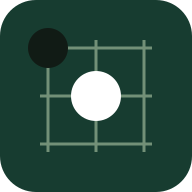

五子棋MUST5
一方棋盘，随时开局。
PLAY A LITTLE. THINK AHEAD.
和 AI 下一局
正在准备棋局
你黑棋 · 先手
准备本地 AI白棋 · 后手
准备正在载入 AI，首次打开请稍等。
点击交叉点落子。键盘可使用方向键移动，Enter 或空格落子；Home、End 跳至本行两端。

一方棋盘，随时开局。
PLAY A LITTLE. THINK AHEAD.
正在载入 AI，首次打开请稍等。
点击交叉点落子。键盘可使用方向键移动，Enter 或空格落子；Home、End 跳至本行两端。